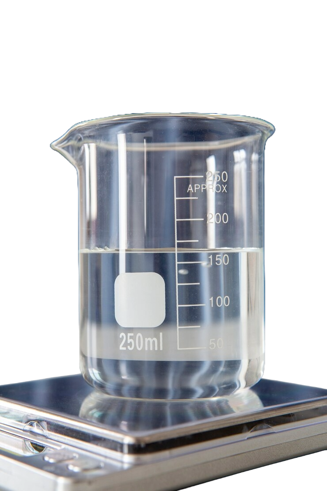
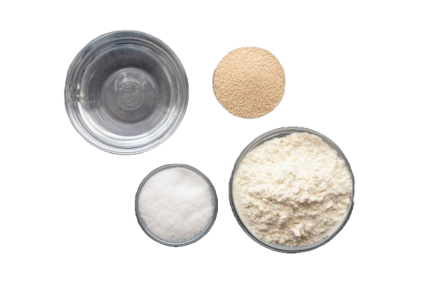
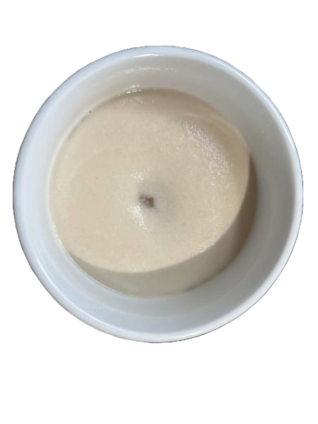

Step 1: Proof the Yeast
Add Water Take 1/2 cup of warm water to the bowl of a stand mixer fitted with a dough hook
Add Yeast & Sugar Sprinkle sugar and yeast into water. Let stand for 5-10 minutes until it is foamy
Activate Yeast Let this stand for 5-10 minutes until foamy